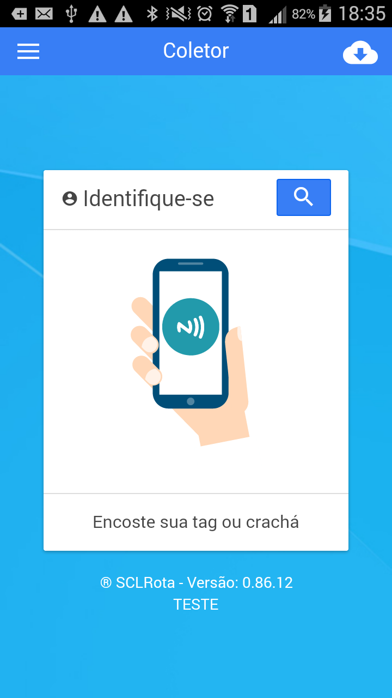
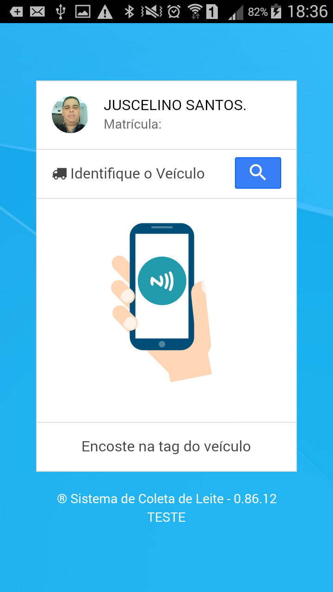
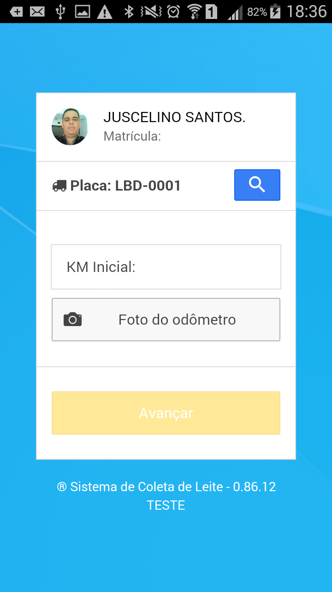
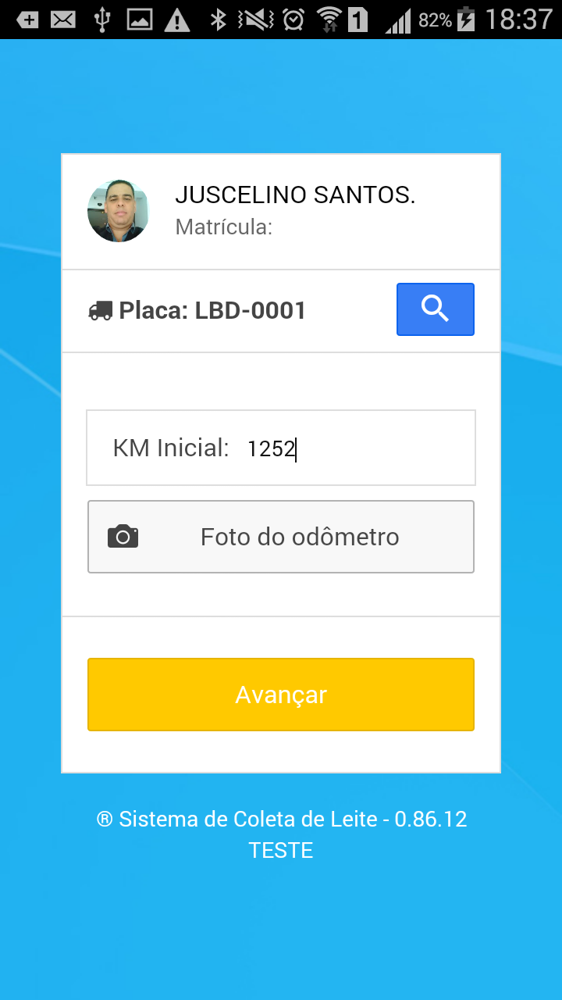
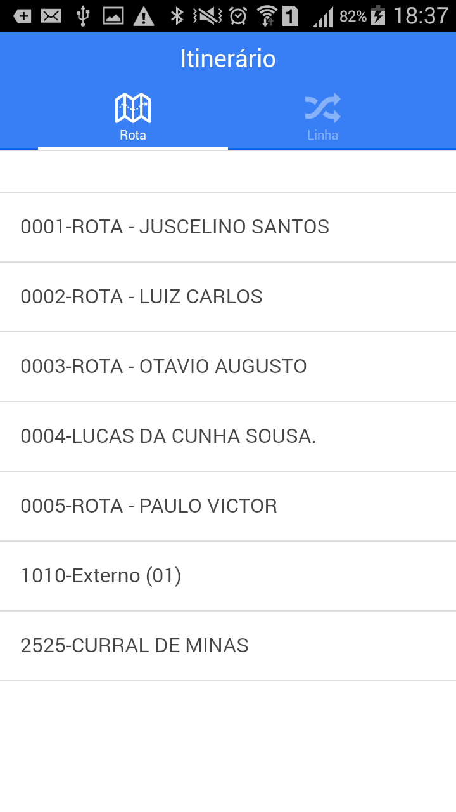
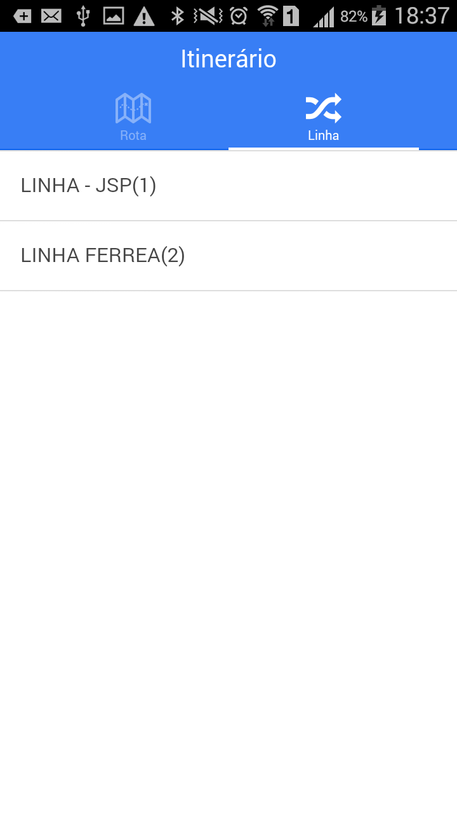
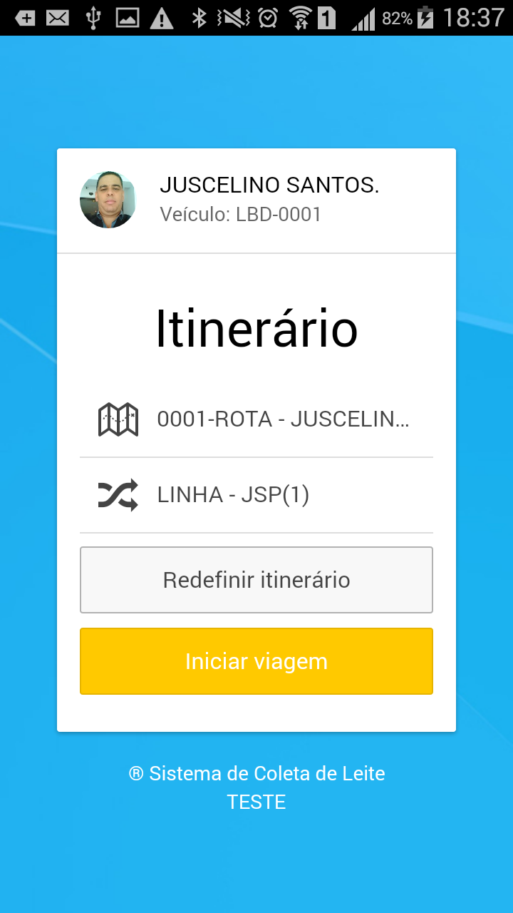

Abrindo Viagem
Abertura de viagens #
O registro do início da viagem deve ser feito no exato momento em que o deslocamento é iniciado. Não há necessidade de cobertura de rede ou internet para que este procedimento funcione. As telas abaixo exemplificam o comportamento do Aplicativo.
1. Identificação do Agente de Coleta (Motorista)#
O Agente de Coleta deve aproximar, a (Tag) que o identifica, da parte de traz do celular ou clicar no ícone de busca para exibir uma lista com todos os nomes dos motoristas cadastrados e clicar em seu nome.

Após a identificação do motorista, o aplicativo exibirá o nome selecionado e solicita que seja feita a identificação do veículo.
2. Identificação do Veículo#
o Agente de coleta (Motorista) deve aproximar, a (Tag) que identifica o veículo, da parte de traz do celular ou
clicar no ícone de busca para exibir uma lista com todos as placas
dos veículos cadastrados e clicar em uma para escolhe-la.

finalizada a identificação do veículo, o próximo passo será registrar a quilomentragem inicial:
3. KM - Saída#
Nesta tela, o motorista deve informar a quilomentragem que está registrada no painel do veículo e , se for solicitado, fazer uma foto para comprovar os números do odômetro. Fazer a foto é opcional, a menos que a empresa ajuste o aplicativo para exigir, e neste caso, o processo só irá continuar se a foto for feita.
#
4. Foto do Velocímetro#
Ao clicar no botão o aplicativo irá acionar a câmera do celular para que seja feita a foto do painel e logo após registrada a foto, deve-se clicar no botão [Avançar]. 
5. Escolhendo a Rota#
Rotas sao conjuntos de linhas, servem apenas para agrupar as linhas que são feitas pela mesmo transportador ou que estão na mesma unidade do laticínio. Escolher a rota que representa a região ou plataforma onde o motorista vai descarregar o leite quando finalizar a viagem.

6. Escolhendo a Linha#
As linhas representam o conjunto de fazendas que devem ser visitadas em uma viagem. Toda a relação de fazendas e produtores está ligada a linha escolhida. É importante escolher a linha correta do dia de trabalho, pois se por algum motivo o agente de coleta (Motorista) não chegar até o tanque resfriador, ele terá condições de escolher a fazenda em uma lista e assim registrar a coleta, cancelar, fazer uma ocorrênca, etc.
#
7. Iniciando a Viagem#
Quando todos os passos inciais forem concluídos, o sistema exibirá a tela de abertua de viagem, onde haverá um resumo de todas as escolhas que o motorista fez para inciar a viagem. Se houver necessidade, ele poderá corrigir alguma informação de abertura clicando no botão [Redefinir Itinerário], e acertar as escolhas.

Após a conferência do itinerário, clicar no botão [Iniciar Viagem]. O Aplicativo passrá então para a tela de registro de coletas, que será feito a partir da 1a. fazenda, até chegar no local, o motorista pderá deixar o celular no mode de descanso para economizar bateria.